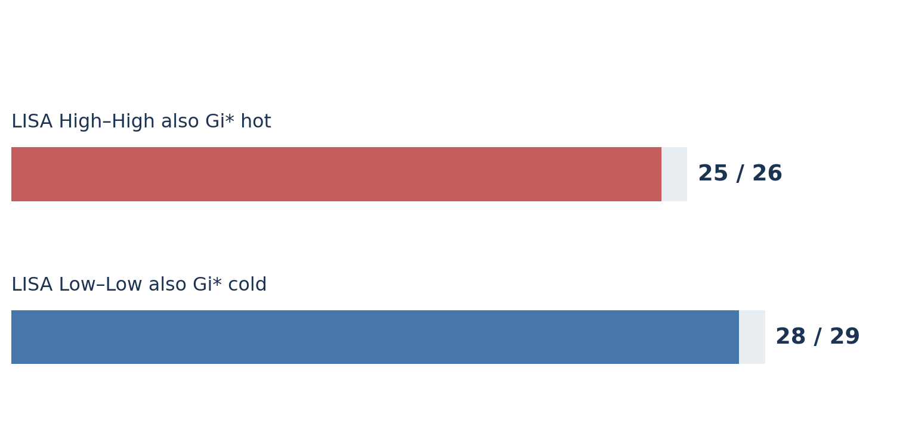
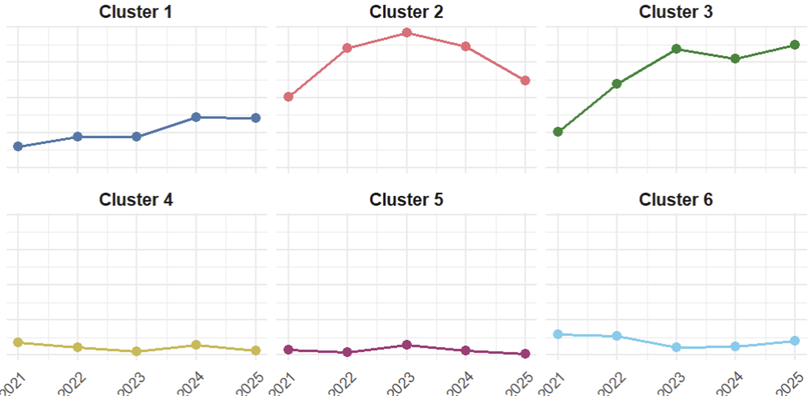

Contents
- Study overview
- Data preparation and quality
- Analytical framework
- Cross-sectional clusters: LISA and Gi*
- EHSA: spatio-temporal patterns
- Why temporal interpretation matters
- Selecting the SKATER partition
- Connected regional groups
- Cluster temporal profiles
- Integrated insights and limitations
Note: This executive summary focuses on the analytical story and visual evidence. Complete code, diagnostics, references and the AI tool declaration are provided in the companion Technical Report.
1. Study Overview
Where are political violence events concentrated across Myanmar townships, how do the patterns change over time, and which geographically connected regions share similar histories?
- Location: Myanmar’s township (ADM3) boundaries.
- Time: January 2021–September 2025.
- Measure: recorded political violence event frequency, not severity.
Where? Local Moran’s I (LISA).
How concentrated? Getis-Ord Gi*.
How does concentration change? EHSA.
Which regions have similar histories? SKATER.
2. Data Preparation and Quality
- ACLED: 54,000 eligible records across Battles, Explosions/Remote violence and Violence against civilians; 53,992 spatially matched.
- MIMU: complete township boundary dataset.
- 57 monthly periods: zero-event township-months retained.
- 330 townships retained after repairing nested GeometryCollections.
- 327 townships included in neighbour-based analysis.
- 3 townships without contiguous neighbours retained on maps separately.
- 18,639 complete township-month observations in EHSA.
Workflow: ACLED event screening → MIMU boundary repair → spatial assignment → complete monthly panel → spatial and spatio-temporal analysis.
3. Analytical Framework
High–High, Low–Low and spatial outliers.
Statistically significant hot and cold spots.
Sporadic, oscillating and persistent spatial patterns using monthly data.
Contiguous townships with similar yearly violence profiles and event persistence.
Interpretation boundary: LISA/Gi* significance, EHSA temporal classification and SKATER cluster membership describe different properties. They are not interchangeable risk scores.
4. LISA and Gi* — Strong Spatial Agreement

Derived from TR §10.4 comparison table; an agreement chart, not a spatial map.
- 25 of 26 LISA High–High townships are Gi* hot spots.
- 28 of 29 LISA Low–Low townships are Gi* cold spots.
- Overall Gi*: 27 hot, 32 cold.
Three townships without contiguous neighbours were not tested, but remain on the reference maps.
5. EHSA — Monthly Spatial Patterns
The monthly EHSA classifications distinguish sporadic, oscillating and persistent local spatial patterns. Colours follow TR §11.4 (red = hot; blue = cold; grey = other).
Hot spots: ■ sporadic · ■ oscillating.
Cold spots: ■ sporadic · ■ oscillating · ■ persistent.
Other: ■ no contiguous neighbour · ■ no pattern detected.
Caution: A coldspot category describes a relative statistical pattern, not an area that is necessarily safe.
6. Why Aggregate and Monthly Patterns Differ
Among 27 Gi* hot spots:
- 17 sporadic EHSA coldspots
- 8 no pattern detected
- 2 sporadic EHSA hotspots
Gi* uses full-period aggregated frequency. EHSA uses monthly local patterns and different classification rules; the categories are not directly equivalent.
7. SKATER — Why Six Clusters?
- 5 cuts to the minimum spanning tree.
- WSS: 1,056.38.
- Smallest cluster: 13 townships.
- Largest cluster: 88 townships, compared with 167 under five clusters.
There is no clear WSS elbow. Six groups balance within-cluster similarity, cluster size and geographic interpretability.
8. SKATER — Connected Regional Groups
| 1 |
88 |
| 2 |
82 |
| 3 |
36 |
| 4 |
13 |
| 5 |
29 |
| 6 |
79 |
The 327 clustered townships are contiguous within their assigned group. The three isolated townships are shown separately. Cluster labels are not severity rankings.
9. Temporal Profiles by SKATER Cluster

Distinct trajectories: Cluster 2 peaks in 2023 then declines; Cluster 3 rises strongly and rebounds in 2025; Clusters 4 and 5 remain comparatively low.
Annual values are average monthly recorded events per township; 2025 covers January–September only. Descriptive patterns are not trend significance tests.
10. Integrated Insights, Applications and Limits
23 of 27 Gi* hot spots are in Cluster 2. Cluster 5 contains 21 of 32 Gi* cold spots (21/29 of its townships).
17 of 27 full-period Gi* hot spots are EHSA sporadic coldspots. Overall concentration is not the same as monthly persistence.
SKATER groups neighbouring townships with similar historical frequency patterns, supporting regional monitoring perspectives.
Limits: historical records are not current safety estimates. Event counts are not severity; reporting and location uncertainty remain; 2025 has only nine months; descriptive patterns are not causal explanations.
Sources: ACLED conflict events and codebook; MIMU township boundaries; Su Mon (ACLED, 2024); CFR Global Conflict Tracker; R for Geospatial Data Science and Analytics, Chs. 10–12. Complete APA references, code and AI disclosure are included in the Technical Report.
11. References
For complete data preparation, methodology, diagnostics, code and interpretation: View the full Technical Report